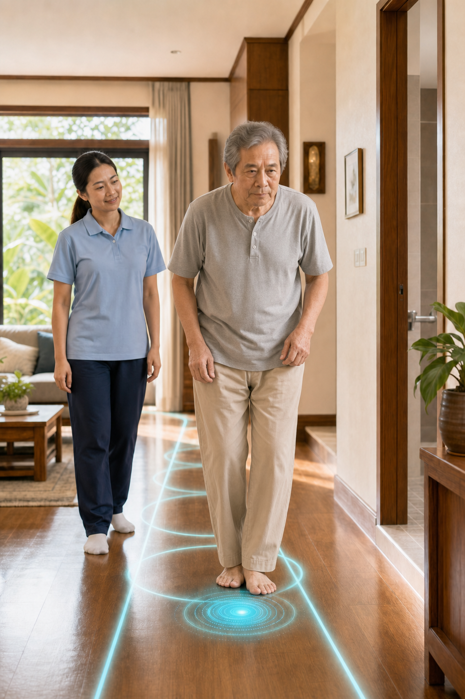

แผน 06 · PARKINSON MOBILITY · TEAM 4

แผนฟื้นฟูหลักของคุณ
เคลื่อนไหวคล่องขึ้น
เดินต่อเนื่องมากขึ้น
สำหรับโรคพาร์กินสันที่เริ่มก้าวยาก ก้าวสั้น หมุนตัวติด หรือเคลื่อนไหวไม่สม่ำเสมอตามช่วงยา
โรคและคำสำคัญที่เกี่ยวข้อง
กดอ่านเฉพาะคำที่ต้องการ เพื่อเข้าใจว่าทำไมแผนนี้จึงต้องฝึกต่างจากโปรแกรมเดินทั่วไป
โรคพาร์กินสันเป็นโรคของระบบประสาทที่กระทบการควบคุมการเคลื่อนไหว อาการของแต่ละคนและแต่ละช่วงเวลาอาจไม่เหมือนกัน แผนจึงต้องดูทั้งการเคลื่อนไหวจริงและช่วงที่ยาออกฤทธิ์
 จุดสำคัญอยู่ที่เซลล์สร้างโดพามีนในสมองส่วนกลางและเครือข่ายที่เชื่อมกับ striatum ไม่ใช่รอยโรควงเดียวแบบ Stroke
จุดสำคัญอยู่ที่เซลล์สร้างโดพามีนในสมองส่วนกลางและเครือข่ายที่เชื่อมกับ striatum ไม่ใช่รอยโรควงเดียวแบบ Strokeแอพใช้ข้อมูลนี้เพื่อวางแผน ไม่ใช้เพื่อวินิจฉัยหรือปรับยา
ดูภาพและอ่านว่าโรคพาร์กินสันผิดปกติตรงไหนของสมอง↗
3 ปัญหาหลักที่ควรจัดการก่อน
เริ่มจากปัญหาที่กระทบการใช้ชีวิตจริง แล้วตอบเพิ่มเพื่อให้ระบบปรับจังหวะ ความหนัก และระดับการช่วยเหลือ
0/3
01
การเคลื่อนไหวช้าหรือเล็กกว่าที่ตั้งใจ
การลุก เอื้อม พลิกตัว หรือก้าวอาจค่อย ๆ เล็กลงโดยไม่รู้ตัว ทำให้ใช้เวลานานและเสียแรงมากขึ้น
แผนจัดการปัญหานี้
ใช้การเคลื่อนไหวที่กว้าง ชัด และมีเป้าหมายในกิจกรรมจริง พร้อมวางเวลาฝึกในช่วงที่ร่างกายตอบสนองดีที่สุด
ตอบเพิ่มเพื่อเลือกช่วงฝึก
ช่วงที่ยาออกฤทธิ์และเคลื่อนไหวได้ดีเลือกจากสิ่งที่สังเกตได้จริงในแต่ละวัน
คลิกเพื่อตอบ
สิ่งที่ต้องดูจากการเคลื่อนไหวจริง
02
เริ่มก้าว หมุนตัว หรือผ่านพื้นที่แคบแล้วเท้าติด
Freezing อาจเกิดเฉพาะบางสถานการณ์ จึงต้องรู้ทั้งความถี่และสิ่งกระตุ้นก่อนเลือกเสียงหรือเส้นนำจังหวะ
แผนจัดการปัญหานี้
หยุดตั้งหลัก ถ่ายน้ำหนัก แล้วใช้คำสั้น เสียงนับ หรือเป้าหมายบนพื้นเพื่อเริ่มก้าวใหม่ โดยฝึกในสถานการณ์ที่ปลอดภัยก่อน
บันทึกอาการ 7 วันเพื่อเลือก cue ให้ตรง
จำนวนครั้งและสถานการณ์ที่เท้าติดกรอกจำนวนครั้ง ไม่ต้องทดลองให้เกิดอาการ
คลิกเพื่อตอบ
สิ่งที่ต้องทดลองอย่างมีผู้ดูแล
03
การลุก เดิน และทรงตัวในบ้านยังไม่สม่ำเสมอ
ความสามารถอาจต่างกันตามเวลา ความเหนื่อย และสิ่งรบกวน ทำให้บางช่วงดูดีแต่บางช่วงเสี่ยงล้ม
แผนจัดการปัญหานี้
- แยกการเดินออกจากการถือของหรือพูดคุยในช่วงฝึก
- เตรียมพื้นที่หมุนตัวให้กว้างและทางเดินให้โล่ง
- คงอุปกรณ์และคนเฝ้าไว้จนกว่าจะประเมินว่าลดได้อย่างปลอดภัย
ตอบจากความสามารถในชีวิตประจำวัน
การลุกยืน การเดิน และเหตุเกือบล้มเลือกตัวช่วยที่ใช้จริงและกรอกเหตุการณ์ช่วง 30 วัน
คลิกเพื่อตอบ
สิ่งที่ควรประเมินในบ้านจริง
แผนฝึกเริ่มต้น · 2 ท่า
ฝึกขยับให้กว้าง แล้วต่อจังหวะการก้าว
เลือกช่วงที่เคลื่อนไหวดี ทางเดินโล่ง และมีจุดจับหรือคนเฝ้าตามระดับความปลอดภัย ไม่ต้องฝืนในช่วงที่ตัวช้าหรือเท้าติดมาก
ท่า 01 · AMPLITUDE
เอื้อมแขนและตั้งลำตัวให้กว้างในท่านั่ง
ช่วยให้ร่างกายรับรู้ขนาดการเคลื่อนไหวที่ชัดขึ้นก่อนนำไปใช้กับการลุกและเดิน
จำนวนเริ่มต้น4–6 ครั้ง
รอบฝึก1–2 รอบ
นั่งเต็มก้น เท้าวางพื้น ตั้งลำตัว แล้วเอื้อมแขนไปด้านหน้าและออกด้านข้างเท่าที่คุมตัวได้ ไม่กลั้นหายใจ
ท่า 02 · CUEING
เริ่มก้าวข้ามเส้นตามจังหวะนำ
ฝึกหยุดตั้งหลัก ถ่ายน้ำหนัก และเริ่มก้าวใหญ่หนึ่งก้าวก่อนเดินต่อ
จำนวนเริ่มต้น3–5 เที่ยวสั้น
ความปลอดภัยใกล้จุดจับ
ยืนใกล้เคาน์เตอร์ หยุดก่อนเส้น ถ่ายน้ำหนักไปอีกข้าง นับ “หนึ่ง–ก้าว” แล้วก้าวข้ามเส้น ห้ามดึงตัวผู้ป่วยขณะเท้าติด
ปรับระดับอย่างไรให้ปลอดภัย
ปรับโปรแกรมให้เฉพาะตัวขึ้น
คำตอบทั้ง 3 หัวข้อจะช่วยปรับช่วงเวลาฝึก cue ระดับการช่วยเหลือ และ FITT ให้เหมาะกับอาการจริง
เหลือแบบประเมินอีก 3 หัวข้อ
นำข้อความนี้ไปวางใน AI ที่คุณใช้ เช่น ChatGPT, Claude, Gemini หรือแอปอื่น เพื่อถามต่อจากข้อมูลของคุณโดยไม่ต้องเริ่มเล่าใหม่